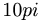

De: La Frikipedia, la enciclopedia extremadamente seria.
De: La Frikipedia, la enciclopedia extremadamente seria. De: La Frikipedia, la enciclopedia extremadamente seria.
| De la serie Elementos químicos: | ||
| ||
| Nombre oficial: | Taurina | |
| Otros nombres: | Animalitis cabroncitis | |
| Serie alquímica: | Ácidos Líquidos | |
| Descubridor: | Red Bull | |
| Color en tabla: | Amarillo pipí | |
| Presente en: | Bilis | |
| Usos: | Dopantes | |
| Estado: | Líquido | |
| Peso kg/puñao: | 4 Newtons | |
| Estructura: | No se sabe | |
| Abstracción: | 54º Farenheit | |
| Humungoso: |  radianes | |
La taurina es un elemento químico de la tabla periódica que se encuentra en la bilis de muchos animales, incluyendo el ser humano. Sin embargo, la más famosa es la extraída del toro. La menestra de incultura es famosa por declararse favorable.
La taurina fue utilizada por primera vez por los griegos, quienes la usaban como dopante durante las Olimpiadas. Más tarde, los romanos descubrieron que tenía propiedades desinfectantes y la utilizaron para esterilizar heridas de guerra. Durante la Edad Media su uso fue prohibido por la Iglesia, que la consideraba pecado. Hacia el año 1864 fue redescubierta por un pastor que mantenía relaciones sexuales con uno de sus toros y la empezó a comercializar con el nombre de Red Bull.
Entre los innumerables usos de esta sustancia se encuentran:
Hace algunos años, los científicos descubrieron que un consumo o uso excesivo de esta sustancia puede provocar algunos efectos no deseados:
Autor(es):